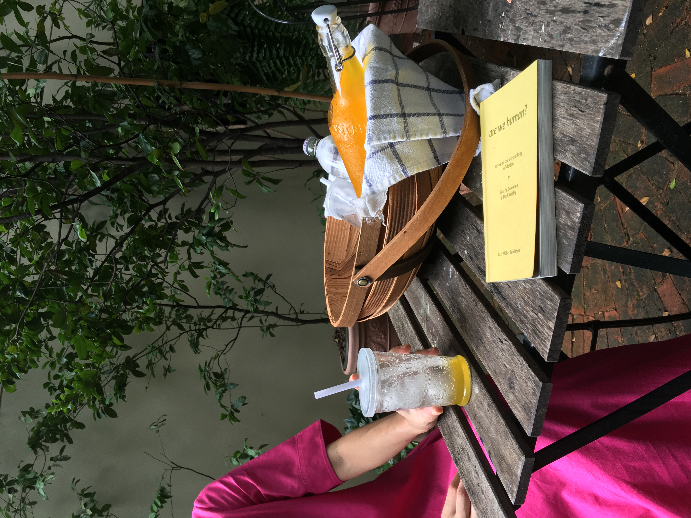
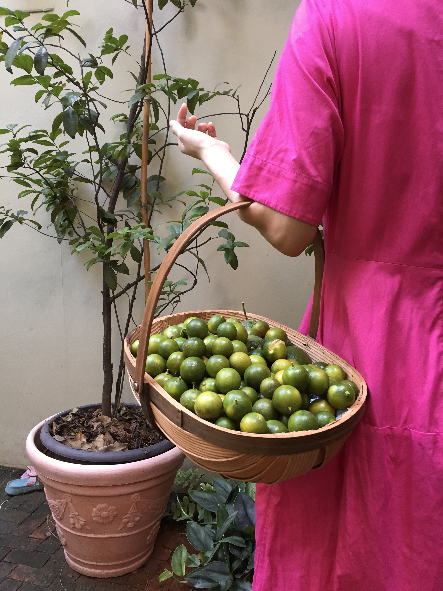

Calamansi Metrics
Make roughly 1100 ml of syrup
Ingredients
-
Calamansi Syrup
- 800 ml of calamansi juice (roughly 2 kg)
- 650 g of sugar
Direction
- 1. Heat calamansi juice in a saucepan
- 2. Add sugar. Stir till all the sugar dissolve.
If you classify people based on the Calamansi Metrics, you’ll get two categories: one the oh-my-god-I-love-calamansi and two the what-is-calamansi. Those who do know calamansi love calamansi. Those who do not are simply missing out.
Calamansi or Citrus x microcarpa, is a small citrus fruit, also known as the Philippine lime or calamondin. Each fruit holds a reservoir of bright yellow juice, carries a distinct pungent scent, and tastes eye-squinting tangy tart.
Just as how kiwis are native to China, but are commercially grown in New Zealand, calamansi are native to China, but are commercially grown in the Philippines. Calamansi is considered the Philippine major crops along side banana, mango and pineapple.
In Thailand, where I grew up, sighting fresh calamansi is as rare an occasion as sighting a hornbill. The first time I tasted calamansi was when I moved to Singapore. I ordered a lime juice expecting lime, but I was pleasantly enlightened by calamansi. At that time, I had already missed out on calamansi for fourteen years of my life.
“S, what was your experience of calamansi?” I jumped S1, my Malaysian friend who lived in the Philippines as a child.
“It was my go-to quencher. My mom’s and sister’s too. My dad would approve because he said it was a healthier choice. Even though, we add in syrup,” S recounted.
The simplest form of calamansi is calamansi “lemonade” which according to S is “super common in restaurants [in the Philippines] — as common as lemonade in the U.S.”
In Everyday Cookery for the Home2—a Filipino cookbook by Sofia Reyes de Veyr, dated back to 1934, the recipe for calamansi punch syrup calls for 200 calamansi heated together with 7 cups of water and 10 cups of sugar. One portion of the syrup is diluted with three portion of water to produce the Philippine “lemonade”.
Aside from serving as lemonade, calamansi is used for marinating, stuffing and dipping in the Philippines. Thin slices of beef are dipped in pepper, soy and calamansi and sautéd in garlic and onion to make bistek Tagalog. Chicken is stuffed with calamansi to make Lechon Manok. Soy are mixed with calamansi to make Siomai3 dipping sauce.
Likewise, calamansi commonly complement Malaysian and Singaporean cuisine. “At home, my mom used it on the side of fried hokkien mee. There’s also a stingray dish—sambal stingray, that is covered in it,” S explained.
"S is so on point. Calamansi on baked sambal fish makes me drool," another Malaysian friend P agreed.
“I think calamansi has always been a constant co-star or supporting actress to a lot of dishes in this region. It complements the salt, the chili and the heat. It makes the dish taste brighter,” S concluded.
Unlike the Philippine “lemonade” which is served by itself, the Malaysian—Nyonya version usually comes with salted dried plums4.
"In Malaysia, we called calamansi juice Air Limau Manis. In fact, it is so overused, you can see them in iced tea too, and sometimes in rose syrup drink Sirap Limau," P noticed.
“Oh! My mother likes to squeeze on top of sambal belachan,” S later added.
When I asked M, my Malaysian friend who lives in Singapore, about her experience of calamansi in Singapore, her response succinctly echoed S’s fandom.
“I love calamansi.”
Calamansi is not only met with enthusiasm in the region. In 2018, the hottest trend in Korea was to mix Soju with calamansi extract.5 Pepero comes in calamansi yogurt flavour.
Although the international demand for calamansi has been increasing, the Philippines’ yearly calamansi production level has been on the decline since 2012 due to the weather, diseases, and less productive tress. The Philippines struggles to even meet demand locally. When it does export calamansi, it exports to East Asia, North America and in recent years United Arab Emirates and Saudi Arabia.
If earlier you found yourself belonging in the second what-is-calamansi group of people, perhaps it is time for you to get your hands on some calamansi—if you can.
- Name has been changed to protect the privacy of individuals. XOXO, Gossip Girl.
- Everyday Cookery for the Home is a cookbook published by the Philippines Education Company. Most cookbooks published in the Philippines during this time, when the Philippines was an American imperial colony, included recipes from France, Spain and the United States. They were tool to educate locals on Western palete. The calamansi syrup punch recipe is one of the few Filipino recipes featured in this particular cookbook while the majority of the recipes in this book is American.
- It's actually amazing how this dim sum dish managed to pollinate in Southeast Asia. Siomai are also found everywhere in Bangkok. Even food carts in front of local schools sell them.
- Not to be confused with the pickled salted plums that come in jars, the kind that are used to make plum soda. The salted dried plums also go well with Diet Coke.
- Hwasa, a member of the K-pop girl group MAMAMOO even testified on the variety show "I Live Alone" that calmansi helps ease the hangover from soju significantly.
-
Reference
- “Citrus × Microcarpa.” National Parks Board, Singapore Government Agency, 29 July 2020, www.nparks.gov.sg/florafaunaweb/flora/3/3/3351.
- “Major Fruit Crops Quarterly Bulletin, January-March 2020.” Philippine Statistics Authority, 1 Jan. 2020, psa.gov.ph/fruits-crops-bulletin/calamansi.
- Zialcita, Fernando N. “Why Insist on an Asian Flavor?” Philippine Studies, vol. 48, no. 4, 2000, pp. 523–548. JSTOR, www.jstor.org/stable/42634425. Accessed 8 Aug. 2020.
- Chee-Beng, Tan, editor. Chinese Food and Foodways in Southeast Asia and Beyond. NUS Press, 2011. JSTOR, www.jstor.org/stable/j.ctv1ntg4x. Accessed 8 Aug. 2020.
- Ku, Robert Ji-Song, et al., editors. Eating Asian America: A Food Studies Reader. NYU Press, 2013. JSTOR, www.jstor.org/stable/j.ctt9qg92s. Accessed 8 Aug. 2020.
more stories


Back to the Top
The Deli Club © 2020